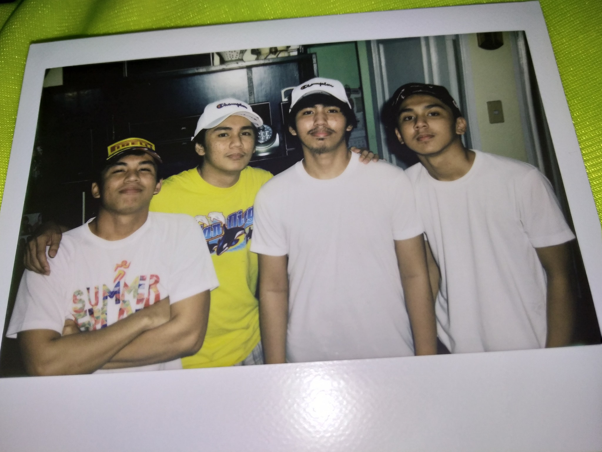

This college student was always interested in the ways that technology may change the world because he grew up in the technological age.1 He enrolled in a college information technology course since he was interested in learning more about the subject and its possibilities.2 However, the COVID-19 epidemic significantly altered the trajectory of his education and life.3 He was forced to adapt to remote learning and a new way of life as the globe came to a standstill.4 Despite these obstacles, he stayed committed to his love of information technology and kept learning new applications for it.5 The pandemic  made it clear how crucial technology is to our daily lives and how important it is to our ability to stay connected and informed.6 This college student made the decision to use his abilities to assist others in need because he recognized the potential for technology to be used for good.7 Additionally, he created tools that made it easier for her brothers to access information and services, and he employed his technical know-how to build online gatherings and communities where people could interact and support one another.8 This college student stayed committed to his objective of using technology for good in spite of the difficulties the epidemic presented.9 He saw the epidemic as a chance to help people and have a good influence on the world since he was committed to achieving both.10 This college student is still at the vanguard of the technological revolution as the globe starts to recover from the epidemic, always looking for new ways to apply technology to improve people's lives.11 He is a talented and committed young guy who is positioned to have a big effect on the information technology industry.12